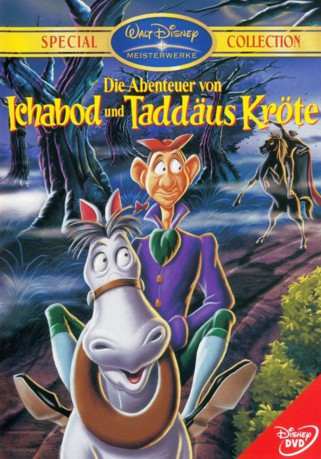

#3721 Die Abenteuer von Ichabod und Taddäus Kröte
Alternativ: The Adventures of Ichabod and Mr. Toad
Auszeichnungen: 1 GoldenGlobes gewonnen
 
 IMDB-Wertung: 7.1 / 10
IMDB-Wertung: 7.1 / 10  Metascore: 0
Metascore: 0 
Der Wind in den Weiden erzählt die Geschichte des unternehmungslustigen Taddäus Kröte, der sich jederzeit Hals über Kopf in die haarsträubendsten Abenteuer stürzt. Seine besten Freunde, der freundliche Mauli, Ratte und Meister Dachs versuchen Taddäus Kröte von seinem neuesten Hobby fernzuhalten: den schnellen Verkehrsmitteln, was nie funktioniert. Bei diesem Mal sitzt er aufgrund eines Diebstahls im Gefängnis. Doch Kröte hat eine Idee, wie er seine Unschuld beweisen kann.
Jahr: 1949
Dauer: 68 Minuten
FSK:
Land: USA Studio: RKO Radio PicturesTonspuren: DTS - ,
Untertitel: Deutsch, Englisch,
Auflösung: 1080p (1440x1080) Größe: 3440 MB
Genre: Horror, Komödie, Fantasy, Animation/Trick, Familie
Regisseur:  James Algar, Clyde Geronimi, Jack Kinney
James Algar, Clyde Geronimi, Jack Kinney
Drehbuch: David Wagner
Soundtrack:
Darsteller:
 Bing Crosby als Relating the Story of Ichabod Crane
Bing Crosby als Relating the Story of Ichabod Crane Basil Rathbone als Narrating the Story of Mr. Toad / Policeman
Basil Rathbone als Narrating the Story of Mr. Toad / Policeman J. Pat O'Malley als Cyril Proudbottom
J. Pat O'Malley als Cyril Proudbottom- Eric Blore als Mr. Toad
- John McLeish als Prosecutor
- Colin Campbell als Mole
- Campbell Grant als Angus MacBadger
- Claud Allister als Rat
- The Rhythmaires als Additional voices
- Pinto Colvig als Ichabod Crane, screaming / Additional Voices, segment Ichabod Crane:The Legend Of Sleepy Hallow , uncredited
- Leslie Denison als Judge / First Weasel , uncredited
- Alec Harford als Mr. Winky , uncredited
- Edmond Stevens als Second Weasel , uncredited
Datei: X:\Kinder Disney HD\Classic Cartoon\Abenteuer von Ichabod und Taddäus Kröte, Die (1949, FSK, 1440x1080).mkv seit 26.05.2016
Festplatte: Kinder-Filme+Trick
 Es gibt insgesamt 22 Filme in der Gruppe 'Kinder Disney HD\Classic Cartoon'
Es gibt insgesamt 22 Filme in der Gruppe 'Kinder Disney HD\Classic Cartoon'